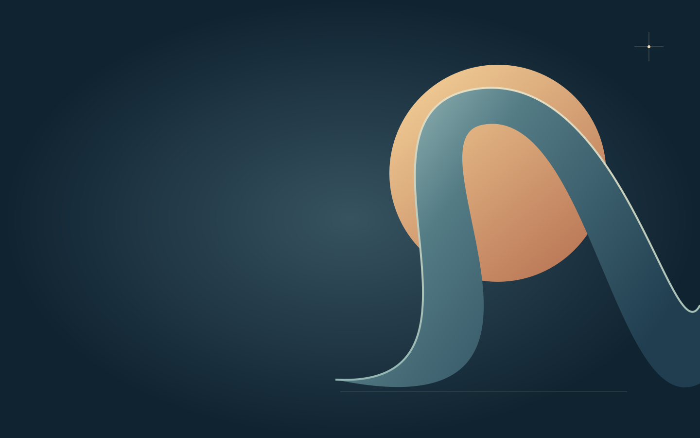

An image, held in time
Let a moment
take its time.
Explore the shape of a movement at your own pace. This local demonstration begins with a complete still image.
Processed by your browser. The selected file is never uploaded. A silent clip with frequent keyframes works best.
Choose a local video to enable the study. The poster is the complete default.

A pause with a purpose
Watch the
shape change.
The illustration is an original placeholder. Your chosen footage replaces it when the browser is ready.
Production notes
The still image
is part of the work.
A scrolling film needs a first frame that works before the video arrives. Keep the message, navigation, and essential information complete in that state.
For your own page, export a poster from the actual footage. Use a short, optimized local clip with dense keyframes, inspect its intermediate frames, and check the devices your audience uses.
This example deliberately uses a static composition on narrow screens and when reduced motion is requested. Change the system preference while the page is open to see the mode update.
Back to the opening ↑